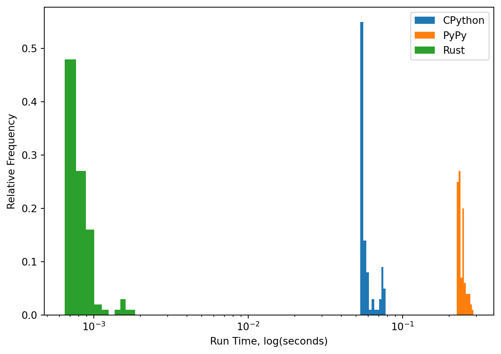

Start parking at 0
Start driving at 5
Start parking at 7
Start driving at 12
Start parking at 14
Introduction
This post gives an implementation of this example from the SimPy documentation:
import simpy
def car(env):
while True:
print('Start parking at %d' % env.now)
parking_duration = 5
yield env.timeout(parking_duration)
print('Start driving at %d' % env.now)
trip_duration = 2
yield env.timeout(trip_duration)
env = simpy.Environment()
env.process(car(env))
env.run(until=15)Rust Implementation
I implemented the above car example in Rust.
Key Concepts
The major difference is the introduction of enums for driving events and parking events rather than just having a single type of event. Let’s break down the key concepts anyway.
First, there are events implemented using an Event struct which always have two types of data: time and event_type. The time datum is the time that the event is scheduled to elapse. The event_type essentially provides a flag for how to update the state of the simulated car.
The Environment struct manages the simulation, including the event schedule is is implemented as a reverse binary heap (BinaryHeap combined with Reverse).
Lastly, is the use of Rust’s enums. Here they are used to define the two types of events: Parking and Driving.
Implementation
Now that we’ve looked at the key concepts, let’s go through the code in more detail. First, we need to include some crates to help us with the implementation.
First we need to import some crates.
// car.rs
use std::cmp::Ordering;
use std::collections::BinaryHeap;
use std::cmp::Reverse;Ordering provides traits that we’ll use for implementing the ordering of events in the event schedule. BinaryHeap and Reverse are useful for implementing the event schedule itself.
Next I defined different types of events. Maybe it would be more logical to define the existence of events first, but we’re just going in the order of my code event if that is a little weird. I defined different types of events as a EventType enumeration. I also used the derive attribute to attach traits related to debugging and comparison of events.
#[derive(Debug, PartialEq, PartialOrd)]
enum EventType {
Parking,
Driving,
}Defining events themselves as structs works well here because they basically are value objects. They contain two pieces of data: time and event_type. The former is the time that an event is scheduled to occur. The latter is where each instance of Event will store its type.
#[derive(Debug, PartialEq, PartialOrd)]
struct Event {
time: f64,
event_type: EventType
}I also included implementations for the Eq and Ord, which involves using some predefined methods. We just need to declare them.
impl Eq for Event {}
impl Ord for Event {
fn cmp(&self, other: &Self) -> Ordering {
self.partial_cmp(other).unwrap_or(Ordering::Equal)
}
}The environment struct is responsible for running the simulation, and has two main components: the event schedule and a clock. The event schedule, which I somewhat weirdly called a “queue” in the code, is actually a reverse binary heap.
struct Environment {
event_queue: BinaryHeap<Reverse<Event>>,
clock: f64,
}Now just because the environment has an event schedule and a clock doesn’t mean it knows what to do with these things, so I provide some implementations so that the environment knows what to do. The new implementation simply instantiates a new (empty) event schedule and begins with a clock set to zero.
The schedule_event pushes an event (in reverse ordering in terms of how the data structre operates) to the event schedule. We’re using a predefined data structure so we don’t need to implement actually finding the right location to insert a new value.
The run_until implementation is where the magic happens. We continually loop until either a maximum time has been reached or the event schedule is empty, whichever comes first. The logic involves iteratively getting the next event, updating the clock, and then executing the event.
The now implementation is an afterthought that maybe if we extended this coded example then we might want to access the time, but it really doesn’t add anything substantial.
impl Environment {
fn new() -> Self {
Self {
event_queue: BinaryHeap::new(),
clock: 0.0,
}
}
fn schedule_event(&mut self, event: Event) {
self.event_queue.push(Reverse(event));
}
fn run_until(&mut self, end_time: f64) {
while let Some(Reverse(current_event)) = self.event_queue.pop() {
if current_event.time < end_time {
self.clock = current_event.time;
current_event.execute(self);
} else {
self.clock = end_time;
break;
}
}
}
fn now(&self) -> f64 {
self.clock
}
}I know this code is weirdly ordered. Next I defined some implementations for Event. Just like Environment, it doesn’t magically know what to do. We have to tell it.
The new implementation sets the time and event type.
The execute implementation checks which type of event is elapsing, and updates the state of the car depending on the type of event. Notice that the events themselves ask the environment to schedule further events, which is how the system continues to evolve.
impl Event {
fn new(time: f64, event_type: EventType) -> Self {
Self { time, event_type }
}
fn execute(&self, env: &mut Environment) {
match self.event_type {
EventType::Parking => {
println!("Start parking at {}", self.time);
let parking_duration = 5.0;
env.schedule_event(Event::new(self.time + parking_duration, EventType::Driving));
}
EventType::Driving => {
println!("Start driving at {}", self.time);
let trip_duration = 2.0;
env.schedule_event(Event::new(self.time + trip_duration, EventType::Parking));
}
}
}
}Then we just need to instantiate the environment, schedule the first event which will trigger the cycle of state transitions, and run for the desired amount of time.
let mut env = Environment::new();
// Schedule the initial clock event
env.schedule_event(Event::new(0.0, EventType::Parking));
// Run the simulation until max time
env.run_until(15.0);I think this design is “okay”, but I want to keep exploring different designs for DES in Rust. I like that Environment does not need to know anything about the state of the system being simulated. I would like to weaken the coupling between state transitions and the types of events. Instead of providing impls perhaps all events could have an execute method which just calls a function which it is borrowing from the implementation of the system’s state. That way events could be coupled to state transitions weakly, but not responsible for defining what those state transitions are.
Performance
I am curious about the relative performance the simpy example compared to the Rust example. We can run each example a bunch of times to obtain distributions. Since this car example should be compatible with PyPy, a just in time compiled interpreter for a restriction implementation of Python, we will use that as well as the CPython interpreter. We’ll collect up a bunch of results for both Python and Rust.
from time import perf_counter
import subprocess
import matplotlib.pyplot as plt
import numpy as np
from run_python import run_python_file as py
N = 100
BINS=10cpython_results = []
for _ in range(N):
tic = perf_counter()
py('car.py')
toc = perf_counter()
cpython_results.append(toc - tic)pypy_results = []
for _ in range(N):
tic = perf_counter()
py('car.py', 'pypy3')
toc = perf_counter()
pypy_results.append(toc - tic)rust_results = []
for _ in range(N):
tic = perf_counter()
subprocess.run(
['./car/target/release/car'],
capture_output=True,
text=True,
check=True
)
toc = perf_counter()
rust_results.append(toc - tic)counts, bin_edges = np.histogram(cpython_results, bins=BINS)
normalized_counts = counts / counts.sum()
plt.bar(bin_edges[:-1], normalized_counts, width=np.diff(bin_edges), label='CPython')
counts, bin_edges = np.histogram(pypy_results, bins=BINS)
normalized_counts = counts / counts.sum()
plt.bar(bin_edges[:-1], normalized_counts, width=np.diff(bin_edges), label='PyPy')
counts, bin_edges = np.histogram(rust_results, bins=BINS)
normalized_counts = counts / counts.sum()
plt.bar(bin_edges[:-1], normalized_counts, width=np.diff(bin_edges), label='Rust')
plt.xscale('log')
plt.xlabel('Run Time, log(seconds)')
plt.ylabel('Relative Frequency')
plt.legend()
plt.tight_layout()
Let’s also tabulate a basic statistical summary:
import pandas as pd
from IPython.display import Markdown, display
results = pd.DataFrame(
{
'Rust': rust_results,
'CPython': cpython_results,
'PyPy': pypy_results
}
)
display(Markdown(results.describe().to_markdown()))| Rust | CPython | PyPy | |
|---|---|---|---|
| count | 100 | 100 | 100 |
| mean | 0.000867368 | 0.0613815 | 0.246575 |
| std | 0.000195719 | 0.00838948 | 0.0154168 |
| min | 0.000719435 | 0.0546835 | 0.228623 |
| 25% | 0.000758738 | 0.0557973 | 0.234277 |
| 50% | 0.000817318 | 0.0570424 | 0.241753 |
| 75% | 0.000907465 | 0.0626081 | 0.254693 |
| max | 0.00203741 | 0.0852865 | 0.299012 |
Overall it is clear that Rust is substantially faster than the Python-based implementations, which is no surprise. Rust is statically typed, and doesn’t have a garbage collector.
What is more surprising is that running the SimPy example with PyPy was substantially slower than running that sample example with the CPython interpreter. My guess from this is that the overhead for doing the just-in-time compilation is more of a slow down than a speedup on such a small example. I wouldn’t rule out PyPy in general as a speedup for SimPy simulations, but clearly there are limitations on where it will be beneficial.